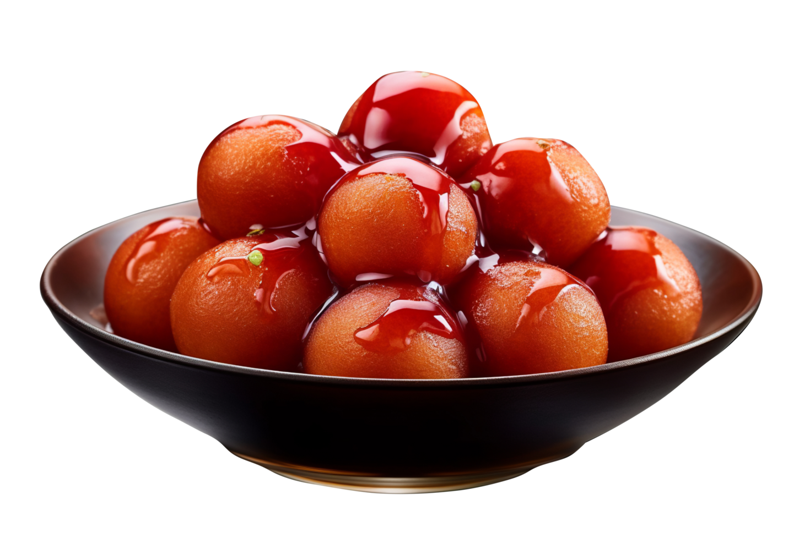
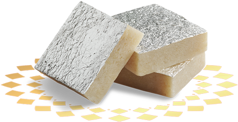
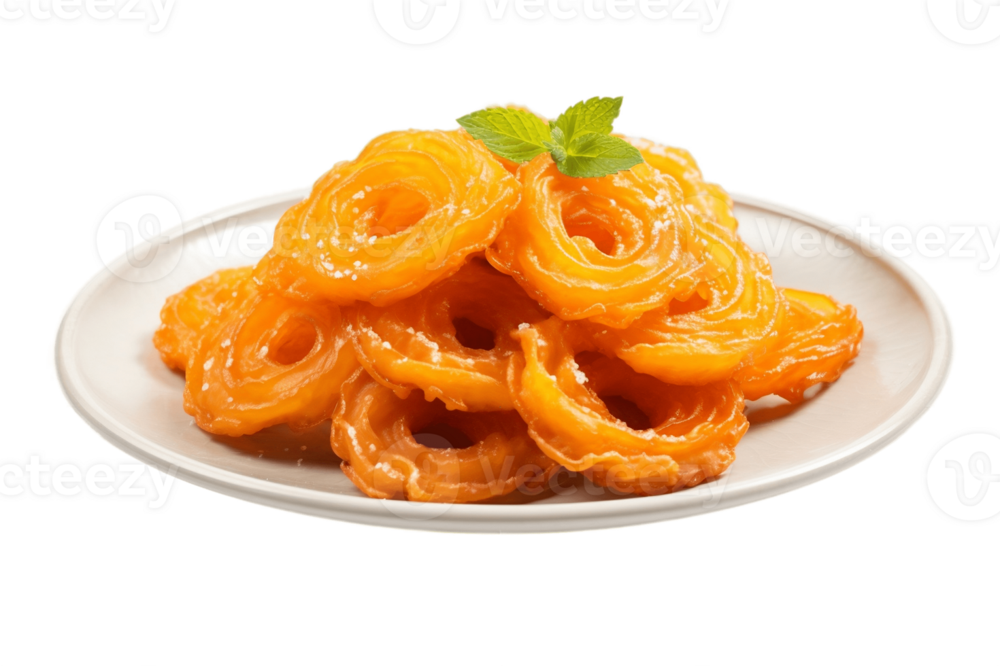

Gulab Jamun..
Ingredients
- Seema Powder
- Sugar
- Oil
Recipe
- Combine sugar and water in a pan and bring to a boil to create the syrup. Remove from heat, add cardamom, and set aside to cool.
- In a mixing bowl, combine flour, paneer, sooji, Nestlé MILKMAID, baking powder, and baking soda. Mix gently to form a soft dough, avoiding over-kneading.
- Divide the dough into 30-35 portions and gently shape them into round balls.
- Heat oil on low flame and fry the balls until they turn golden brown.
- Transfer the fried Gulab Jamuns into the cooled sugar syrup. Once all the Gulab Jamuns are added, bring the syrup to a boil again briefly, then remove from heat.
- Enjoy your homemade Gulab Jamun warm, garnished with your favourite toppings.

Kaaju Katli..
Ingredients
- Cashews
- Sugar
- Oil
Recipe
- Grind Cashews – Blend cashews into a fine powder (don’t over-grind to avoid releasing oil).
- Prepare Sugar Syrup – In a pan, heat sugar and water over low flame until it forms a one-string consistency.
- Mix & Cook – Add the cashew powder to the syrup, stirring continuously until it thickens into a dough-like consistency.
- Knead & Roll – Transfer the mixture onto a greased surface, let it cool slightly, then knead it gently and roll it evenly.
- Cut & Serve – Cut into diamond shapes, apply silver vark (optional), and enjoy your homemade Kaaju Katli!

Laddu..
Ingredients
- Boondi
- Sugar
- Food color
Recipe
- Roast Besan – In a pan, heat ghee and roast besan on low flame until golden brown and aromatic.
- Prepare Sugar – Grind sugar into a fine powder and mix it with cardamom powder.
- Mix Ingredients – Add the sugar mixture and nuts to the roasted besan, mix well, and let it cool slightly
- Shape Laddus – While warm, take small portions and roll them into round balls using your palms.
- Set & Serve – Let the laddus set for 15 minutes and enjoy!

Jalebi..
Ingredients
- Maida
- Sugar
- Oil
- Food color
Recipe
- Roast Besan – In a pan, heat ghee and roast besan on low flame until golden brown and aromatic.
- Prepare Sugar – Grind sugar into a fine powder and mix it with cardamom powder.
- Mix Ingredients – Add the sugar mixture and nuts to the roasted besan, mix well, and let it cool slightly.
- Shape Laddus – While warm, take small portions and roll them into round balls using your palms.
- Set & Serve – Let the laddus set for 15 minutes and enjoy!

...More Page 1 2 3 4 Next